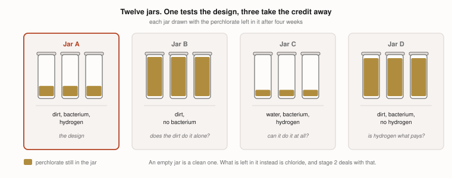
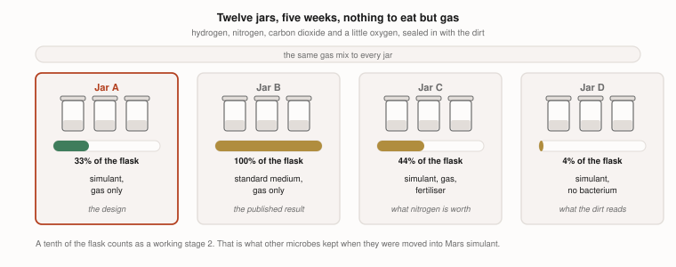
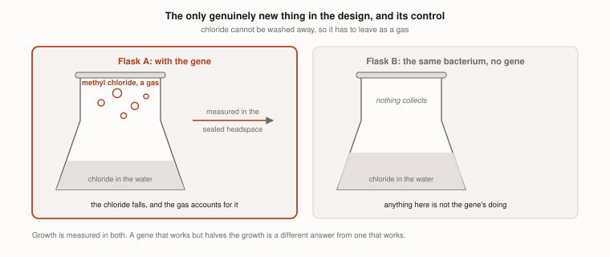

Would your lab have room for four experiments?
This project has spent a year on one question: how would you make soil on Mars? It has got as far as a laptop and a public database can take it, and four of the answers now have to be measured rather than looked up.
All four experiments are finished on paper. The protocols are written, the blank data sheets exist, and the analysis has been rehearsed against invented numbers, so the only thing missing is somewhere to run them. This is an entry for the 3M Young Scientist Challenge 2027.
The most important thing first: three of the four involve no genetic modification at all. They are ordinary soil bacteria and compost worms, the kind sold for a garden, at BSL-1. Only the fourth needs a modified organism, and it is last for that reason.
What we would be asking of you
| Experiment 1 | Experiment 2 | Experiment 3 | Experiment 4 | |
|---|---|---|---|---|
| The question | Does Azospira clean dirt, and not just water? | How much perchlorate can an earthworm stand? | Does Xanthobacter grow in Martian dirt? | Does the added gene blow the chlorine off? |
| Organisms | Azospira suillum PS, a soil bacterium from a culture collection | Eisenia fetida, red wiggler compost worms from a garden supplier | Xanthobacter autotrophicus Py2, and Bacillus megaterium | the same Xanthobacter, carrying one added gene |
| Biosafety | BSL-1, plus a few grams of sodium perchlorate, an oxidiser | BSL-1, or none at all. These are sold for gardening. Same perchlorate | BSL-1. Hydrogen in a headspace, so no flames | a laboratory licensed for modified organisms |
| Space | 12 jars on half a metre of shelf | 18 boxes on half a metre of shelf, in the dark | 12 flasks or jars, on a shelf or a shaker | 8 flasks, inside the licensed space |
| How long | four weeks | nine weeks, mostly waiting | five weeks | six weeks |
| Student on site | a short session a week | two short sessions, at week two and week nine | short measuring sessions, twice a week | whatever your licence allows, up to none |
| From the lab | a gas line or sealed jars, a scale to 0.01 g, and an ion meter or a spectrophotometer | a scale to 0.01 g, and somewhere to lock a small bottle of perchlorate | a gas mix of carbon dioxide, nitrogen and hydrogen, and a plate reader or a turbidity meter | the same gas mix, and a headspace gas chromatograph |
| We bring | jars, simulant, cultures, perchlorate, strips | boxes, compost, worms | jars, simulant, cultures | the strain, once it exists |
| Waste | spent simulant, which leaves as low-level chemical waste | ordinary compost. The worms go home to a garden bin | ordinary compost and spent simulant | whatever your licence requires |
Why these four, and not others. A Mars colony has to grow its own food. Martian regolith is not soil. So this project designed a way to turn one into the other in three stages, with no plumbing, and each of these four experiments sits under one thing the design assumes. Whether the cleaning works in dirt rather than water, which is stage 1. How clean it has to finish before a worm can live there, which sets when stage 3 can start. Whether the bacterium that feeds the bed grows in regolith at all, which is stage 2. And whether the one added gene carries the chlorine out as a gas.
They are in the order that would stop you soonest. Each one can end the design on its own, so the cheapest and most fatal go first.
Experiment 1: does Azospira clean dirt, and not just water?
| The assumption | That Azospira will destroy perchlorate while stuck to damp grains, fed nothing but hydrogen. It does it in water treatment tanks every day, and nobody has run it in regolith |
| What is set up | 12 jars of Mars regolith simulant, wetted and spiked with perchlorate, hydrogen in the headspace. Two controls take the credit away: the same jars with no microbe, and the same microbe in water rather than dirt |
| What happens | Four weeks on the shelf, with the perchlorate measured every week |
| What decides it | Whether the perchlorate falls in the dirt jars. If it falls only in the water control, the design has no stage 1, and version 3 stops here |

Read the full run sheet for Experiment 1 →, the whole thing written out as it would be done at your bench, including the controls and what we would expect to see.
One extra thing to measure while the jars are running. The next bed is started with a scoop of a finished one, so Xanthobacter and Bacillus are carried into dirt that still has perchlorate in it. They do not have to work there, only survive until stage 2. One more jar holding all three, counted at the end, answers that for free.
Experiment 2: how much perchlorate can an earthworm stand?
| The assumption | That stage 1 can leave the dirt clean enough for worms. Nobody has published how clean that is, for any earthworm |
| What is set up | 18 takeaway boxes of compost, six doses of perchlorate from none to 1,000 millionths by weight, three boxes each, ten worms in every box |
| What happens | The boxes sit in the dark for two months. At day 14 the survivors are counted. At day 60 the egg cases are counted |
| What decides it | The dose at which the egg cases collapse. Worms can look healthy for months at a dose that has quietly stopped them breeding, so the egg cases are the number, not the survivors |

Read the full run sheet for Experiment 2 →. It is the cheapest thing in the project, and it is the one we would pick if there is room for only one.
The answer serves two designs. This is the same experiment version 2 asks for. It is also the cheapest thing here, and the one we would pick if there is room for only one.
Experiment 3: does Xanthobacter grow in Martian dirt?
| The assumption | That Xanthobacter will build itself out of gas while sitting in regolith, which is abrasive, salty and alkaline, and keep pulling nitrogen from the air while it does |
| What is set up | 12 jars of wetted simulant under carbon dioxide, nitrogen and hydrogen, with a little oxygen. Controls are the same organism in standard medium, and the same jars with fertiliser added, which shows what the nitrogen fixing is worth |
| What happens | Five weeks, with cells counted twice a week and nitrogen measured at the end |
| What decides it | Whether it grows in regolith, and whether it still fixes nitrogen there. If it grows only with fertiliser, stage 2 needs something shipped from Earth, which is the thing version 3 set out to avoid |

Read the full run sheet for Experiment 3 →, including the gas mix and the control that says what the nitrogen fixing is worth.
Experiment 4: does the added gene blow the chlorine off?
| The assumption | That one gene from a salt marsh plant will work inside a bacterium that has never had it, fast enough to matter. This is the only genuinely new thing in version 3. Everything else is an organism doing what it already does, somewhere it has not been tried |
| What is set up | 8 flasks of Xanthobacter carrying the gene, grown on gas, with chloride at the level a real bed would reach. The control is the same organism without the gene |
| What happens | Six weeks. The headspace is sampled for methyl chloride, and the liquid for chloride going down |
| What decides it | Whether the gas appears, and how fast. Too slow to keep up with stage 1 is the same answer as none at all |

Read the full run sheet for Experiment 4 →. It is the only one that needs a licence, and the run sheet says exactly what we would hand your biosafety officer before anything is built.
It needs more than a bench. This is a modified organism, so it needs a licence and a laboratory set up for it. That is why it is last, even though it is the most interesting.
And it answers only half the question. How fast the gas comes off is a microbiology question, and this experiment settles it. Sizing the vent that carries it outside is an engineering one, and it should go to whoever designs the air handling as soon as there is a rate to hand them.
The two things you would have to decide
| The decision | Where we can be flexible | |
|---|---|---|
| 1 | Whether a minor can work in your lab, and how | Entirely. This is a policy question, not a scientific one. A named supervisor, training, a waiver, restricted hours, or an adult doing any step you would rather a student did not. “Only under direct supervision” or “only on Saturdays” is a yes as far as we are concerned |
| 2 | Whether the fourth experiment is possible at all | Entirely. It needs a licence for modified organisms, and most labs do not have one. If it is out, the first three still stand on their own, and they are the three that decide whether the design is worth modifying anything for |
What we are not asking for, and what you would get
| We are not asking for | |
|---|---|
| Funding | we buy and bring all our own materials |
| Your time designing anything | the protocols, the data sheets and the analysis are already written |
| A research programme | four short experiments, brief visits, and then we are out of your way |
| All four | any one of them is worth running on its own, and the first three need no licence |
You would get BSL-1 experiments run to a written protocol, with the data and the results public, including two that nobody has published before. Credit in any form you like, or none at all if you would rather not be named.
The protocols, exactly as they would be run: Experiment 1 · Experiment 2 · Experiment 3 · Experiment 4
Saanvi Pagadala · Granite Bay, CA